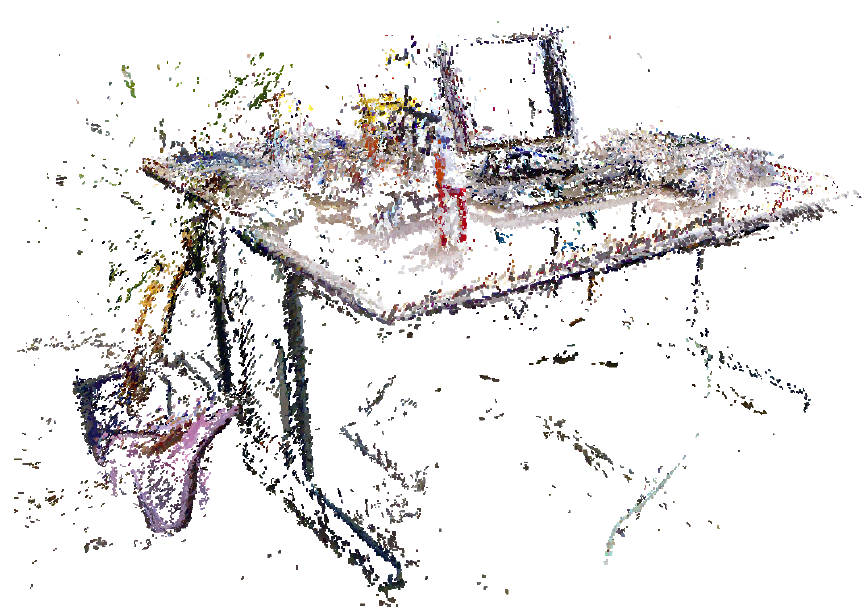
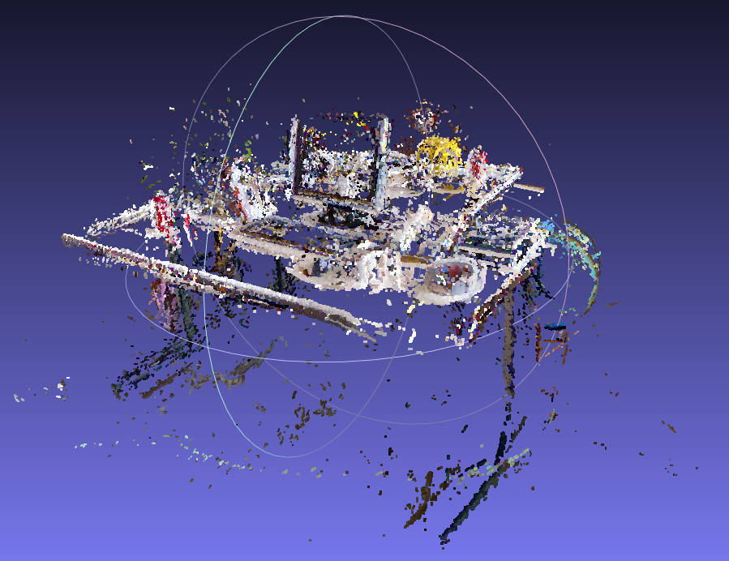
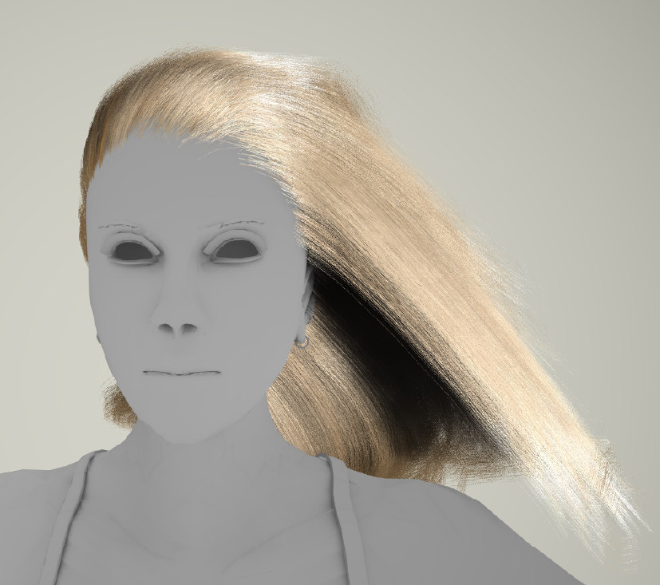

-
HumanRF: High-Fidelity Neural Radiance Fields for Humans in Motion
Representing human performance at high-fidelity is an essential building block in diverse applications, such as film production, computer games or videoconferencing. To close the gap to production-level quality, we introduce HumanRF, a 4D dynamic neural scene representation that captures full-body appearance in motion from multi-view video input, and enables playback from novel, unseen viewpoints. Our novel representation acts as a dynamic video encoding that captures fine details at high compression rates by factorizing space-time into a temporal matrix-vector decomposition. This allows us to obtain temporally coherent reconstructions of human actors for long sequences, while representing high-resolution details even in the context of challenging motion. While most research focuses on synthesizing at resolutions of 4MP or lower, we address the challenge of operating at 12MP. To this end, we introduce ActorsHQ, a novel multi-view dataset that provides 12MP footage from 160 cameras for 16 sequences with high-fidelity, per-frame mesh reconstructions. We demonstrate challenges that emerge from using such high-resolution data and show that our newly introduced HumanRF effectively leverages this data, making a significant step towards production-level quality novel view synthesis.
-
Learning Neural Parametric Head Models
We propose a novel 3D morphable model for complete human heads based on hybrid neural fields. At the core of our model lies a neural parametric representation that disentangles identity and expressions in disjoint latent spaces. To this end, we capture a person's identity in a canonical space as a signed distance field (SDF), and model facial expressions with a neural deformation field. In addition, our representation achieves high-fidelity local detail by introducing an ensemble of local fields centered around facial anchor points. To facilitate generalization, we train our model on a newly-captured dataset of over 3700 head scans from 203 different identities using a custom high-end 3D scanning setup. Our dataset significantly exceeds comparable existing datasets, both with respect to quality and completeness of geometry, averaging around 3.5 M mesh faces per scan. Finally, we demonstrate that our approach outperforms state-of-the-art methods in terms of fitting error and reconstruction quality.
-
DSP-SLAM: Object oriented SLAM with deep shape priors
We propose DSP-SLAM, an object-oriented SLAM system that builds a rich and accurate joint map of dense 3D models for foreground objects, and sparse landmark points to represent the background. DSP-SLAM takes as input the 3D point cloud reconstructed by a feature-based SLAM system and equips it with the ability to enhance its sparse map with dense reconstructions of detected objects. Objects are detected via semantic instance segmentation, and their shape and pose is estimated using category-specific deep shape embeddings as priors, via a novel second order optimization. Our object-aware bundle adjustment builds a pose-graph to jointly optimize camera poses, object locations and feature points. DSP-SLAM can operate at 10 frames per second on 3 different input modalities: monocular, stereo, or stereo+LiDAR. We demonstrate DSP-SLAM operating at almost frame rate on monocular-RGB sequences from the Friburg and Redwood-OS datasets, and on stereo+LiDAR sequences on the KITTI odometry dataset showing that it achieves high-quality full object reconstructions, even from partial observations, while maintaining a consistent global map. Our evaluation shows improvements in object pose and shape reconstruction with respect to recent deep prior-based reconstruction methods and reductions in camera tracking drift on the KITTI dataset.
-
FroDO: From Detections to 3D Objects
Object-oriented maps are important for scene understanding since they jointly capture geometry and semantics, allow individual instantiation and meaningful reasoning about objects. We introduce FroDO, a method for accurate 3D reconstruction of object instances from RGB video that infers object location, pose and shape in a coarse-to-fine manner. Key to FroDO is to embed object shapes in a novel learnt space that allows seamless switching between sparse point cloud and dense DeepSDF decoding. Given an input sequence of localized RGB frames, FroDO first aggregates 2D detections to instantiate a category-aware 3D bounding box per object. A shape code is regressed using an encoder network before optimizing shape and pose further under the learnt shape priors using sparse and dense shape representations. The optimization uses multi-view geometric, photometric and silhouette losses. We evaluate on real-world datasets, including Pix3D, Redwood-OS, and ScanNet, for single-view, multi-view, and multi-object reconstruction.
-
MaskFusion: Real-Time Recognition, Tracking and Reconstruction of Multiple Moving Objects
We present MaskFusion, a real-time, object-aware, semantic and dynamic RGB-D SLAM system that goes beyond traditional systems which output a purely geometric map of a static scene. MaskFusion recognizes, segments and assigns semantic class labels to different objects in the scene, while tracking and reconstructing them even when they move independently from the camera. As an RGB-D camera scans a cluttered scene, image-based instance-level semantic segmentation creates semantic object masks that enable real-time object recognition and the creation of an object-level representation for the world map. Unlike previous recognition-based SLAM systems, MaskFusion does not require known models of the objects it can recognize, and can deal with multiple independent motions. MaskFusion takes full advantage of using instance-level semantic segmentation to enable semantic labels to be fused into an object-aware map, unlike recent semantics enabled SLAM systems that perform voxel-level semantic segmentation. We show augmented-reality applications that demonstrate the unique features of the map output by MaskFusion: instance-aware, semantic and dynamic.
-
Co-Fusion: Real-time Segmentation, Tracking and Fusion of Multiple Objects
In this paper we introduce a new dense SLAM system that takes a live stream of RGB-D images as input and segments the scene into different objects, using either motion or semantic cues, while simultaneously tracking and reconstructing their 3D shape in real time. Crucially, we use a multiple model fitting approach where each object can move independently from the background and still be effectively tracked and its shape fused over time using only the information from pixels associated with that object label. Previous attempts to deal with dynamic scenes have typically considered moving regions as outliers that are of no interest to the robot, and consequently do not model their shape or track their motion over time. In contrast, we enable the robot to maintain 3D models for each of the segmented objects and to improve them over time through fusion. As a result, our system has the benefit to enable a robot to maintain a scene description at the object level which has the potential to allow interactions with its working environment; even in the case of dynamic scenes.
-
Camera-Agnostic Monocular SLAM and Semi-dense 3D Reconstruction
This paper discusses localisation and mapping techniques based on a single camera. After introducing the given problem, which is known as monocular SLAM, a new camera agnostic monocular SLAM system (CAM-SLAM) is presented. It was developed within the scope of this work and is inspired by recently proposed SLAM-methods. In contrast to most other systems, it supports any central camera model such as for omnidirectional cameras. Experiments show that CAM-SLAM features similar accuracy as state-of-the-art methods, while being considerably more flexible.
-
Master-Thesis: Camera-Agnostic Monocular SLAM and Semi-Dense 3D Reconstruction
This thesis discusses localization and mapping techniques based on a single camera. After introducing the given problem, which is known as monocular SLAM, an overview of related publications is provided. Relevant mathematical principles are presented and subsequently used to compare available methods in the abstract. During this comparison, state-of-the-art methods are analysed thoroughly. Various camera models are studied with emphasis on omnidirectional cameras, and corresponding techniques are investigated. Employing omnidirectional cameras imposes special requirements that are not met by common SLAM-methods. In this thesis, techniques that are applicable for traditional as well as omnidirectional cameras are evaluated. A new camera agnostic monocular SLAM system (CAM-SLAM) is presented. It was developed within the scope of this thesis and is inspired by recently proposed SLAM-methods. In contrast to most other systems, it supports any central camera model. Experiments show that CAM-SLAM features similar accuracy as state-of- the-art methods, while being considerably more flexible.
-
Bachelor-Thesis: Real-Time Hair Simulation and Rendering
My bachelor thesis presents real-time techniques for virtual hair generation, simulation and rendering and discusses a prototype which has been implemented within the scope of this thesis. After examining properties of human hair in section 2, section 3 outlines simulation methods and explains mass-spring systems. All simulation methods are based on particles, which are used to generate geometry (section 4) and to subsequently render hair strands. The Kajiya and Kay’s, Marschner and an artist friendly shading system are reviewed in section, before describing shadow and self-shadowing techniques, such as deep opacity maps in section 5. While the subjects of the first sections are platform-independent methods and properties, section 6 presents DirectX 11-oriented implementation details. Finally, the prototype is used to analyse the quality as well as the efficiency of covered techniques in section 7.
-
3DCIS: A Real-time Browser-rendered 3D Campus Information System Based On WebGL

Most of the current real-time 3D web applications are only available with plug-ins as Flash or additional software as Java. Avoiding this drawback, the new WebGL technology provides hardware accelerated computer graphics for web browsers without requiring plug-ins. Using Blender, WebGL, the WebGL-expanding framework GLGE, and an in-house developed exporter B2G from Blender to GLGE we have realized the cutting-edge web application 3DCIS based on a complex 3D model of our campus. With 3DCIS one is able to explore the campus interactively and to become acquainted with local persons and institutions. Textual information about buildings, rooms and persons is linked with 3D model information to enhance the intuitive experience of 3DCIS.